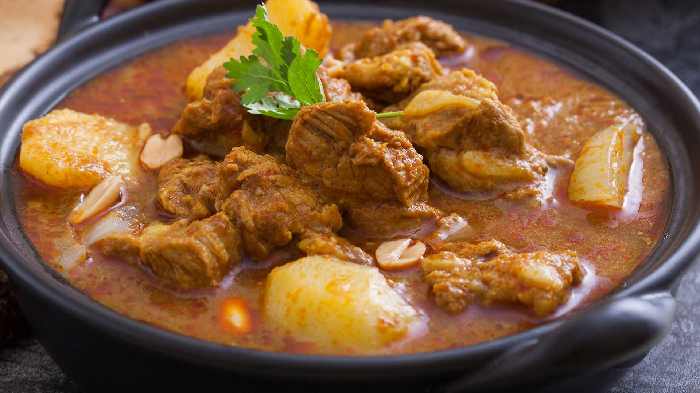

Thai massaman beef curry

A delicous, beef massaman curry.
Of all the curries that Thailand has to offer, massaman is the most intriguing. Also spelt mussaman, this curry has a mysterious complex flavour due to the addition of woody spices to the usual fresh ingredients of lemongrass, galangal, chilli and garlic that form the base of a Thai curry
Ingredients:
- 1 tbsp vegetable oil
- 1 brown onion, cut into large wedges
- 1/3 cup (100g) massaman curry paste
- 1kg Beef Chuck Casserole Steak, cut into 5cm pieces
- 1 garlic clove, crushed
- 1 tbsp finely grated ginger
- 400ml can coconut milk
- 1/2 cup (125ml) beef stock
- 1 cinnamon stick or quill
- 1 long red chilli, thinly sliced
- 2 bay leaves
- 2 tbsp palm sugar
- 2 tbsp lime juice
- 1 tbsp fish sauce
- 1/3 cup (45g) roasted unsalted peanuts
- 400g potatoes, peeled, quartered
- Steamed jasmine rice, to serve
- Coriander sprigs, to serve
- Lime wedges, to serve
Instructions:
- Heat the oil in a large heavy-based pan over medium-low heat. Add the onion and cook for 5 mins. Add massaman paste and cook for 1 min or until fragrant. Add the beef and cook, stirring, for 3 mins or until browned. Add the garlic and ginger and cook for 1 min.
- Add coconut milk, stock, cinnamon, chilli, bay leaves, palm sugar, lime juice, fish sauce, peanuts and potato to the pan and bring to the boil. Reduce heat to low. Cover and simmer for 1 1/2 hours or until the beef is very tender.
- Divide the steamed jasmine rice among serving bowls. Top with the curry and serve with coriander and lime wedges.